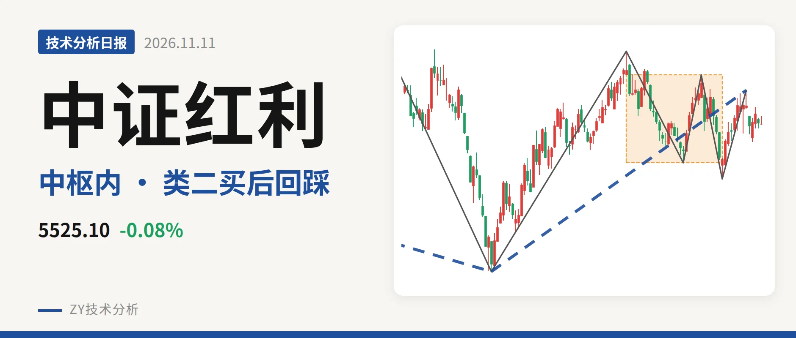
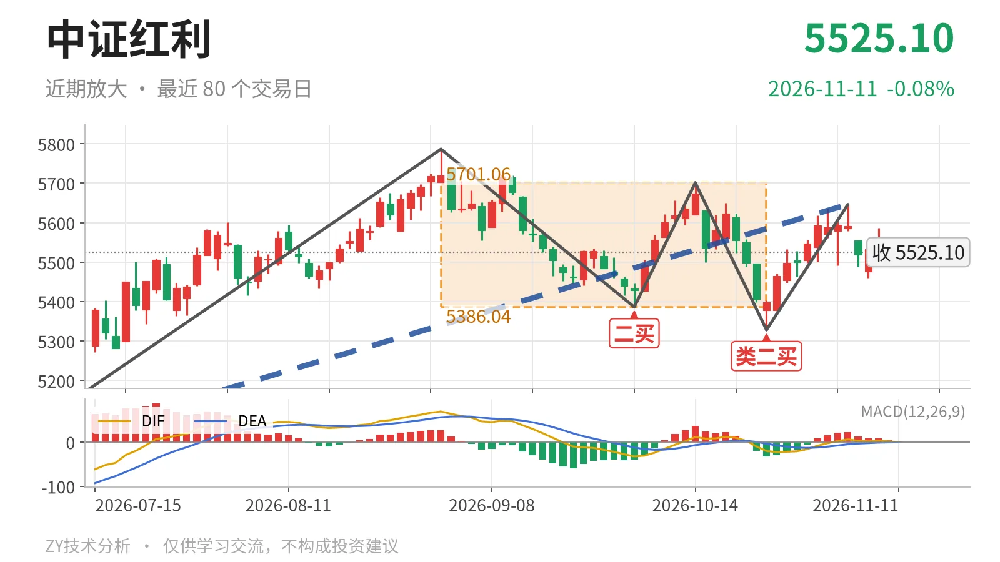

中证红利｜冲高未及5701点，回踩5386点

最近日线中枢 5386.04—5701.06点，收盘位于中枢之内
一句话：反弹未过5701点，回落仍在中枢内，结构中性略弱。
📉 走势结构：反弹仍在日线上涨线段中，更大级别下跌未结束
当前日线仍处于6月30日以来的上涨线段中。这一线段从4995.49点上行至11月4日的5646.01点，上涨约13.0%，还没有结束。但从线段构成的更大级别看，2024年10月8日至2026年6月30日的下跌走势同样没有结束，所以这轮上涨目前只是更大级别下跌里的一段反弹。线段级别买卖点仍只有2022年11月1日一买和2023年10月23日二买，没有新的线段级买点，因此本段上涨暂不能改变更大级别结构。11月4日后价格回落，11月5日至11月11日最高5586.63点、最低5460.31点，最新收于5525.10点，回调尚未形成新的日线下跌笔。

🧭 中枢与位置：回到最近日线中枢内部，中轴略下移
最新收于5525.10点，位于9月1日至10月23日日线中枢5386.04—5701.06点之内。距下沿约139点，距上沿约176点，位置更靠近下沿一侧。与2025年8月4日至2026年4月30日日线中枢相比，中枢中轴由5579.23点下移至5543.55点，略有下移。两个日线中枢区间存在重叠，说明行情没有形成单边离开，而是扩大震荡。11月4日高点5646.01点未触及5701.06点上沿便回落，表明上方压力仍来自最近日线中枢上沿。
⚡ 背驰与买卖点：10月23日类二买由“新低不新弱”支撑
近端最值得看的是9月1日至9月29日下跌笔与10月14日至10月23日下跌笔的背驰。前一笔绿柱面积561、DIF低点-32.7；后一笔绿柱面积53、DIF低点-20.4。价格低点从5386.04点下移至5328.30点，但绿柱面积大幅收缩，DIF低点抬高，属于典型的新低不新弱，对应10月23日类二买5328.30点。该买点所在下跌笔已经结束，后续涨到5646.01点后回落；11月5日以来的回落尚未成笔，所以类二买暂未被破坏。若后续跌破5328点，这个类二买就不能再作为日线笔级别支撑。6月30日一买4995.49点之后，9月29日二买5386.04点抬高，而10月23日类二买5328.30点虽低于二买，仍高于一买，整体只是回到最近中枢内回踩。

🔍 关键位置观察：5386点和5701点决定结构强弱
向上，重新站上5701点上方，回落更可能只是中枢扩展，结构转回偏强震荡；若反抽仍过不了5701点，则继续在5386—5701点区间震荡。向下，如果跌破5386点后反抽不能回到5386点上方，结构上构成日线笔级别三卖；若直接跌破5328点，10月23日类二买被破坏，6月30日以来上涨线段结束的风险上升。当前日线MACD的DIF为-0.4，仍在零轴之下，红柱仅1.0，属于弱反弹后的回踩。结构判断为中性偏弱，弱在11月4日高点未触及最近中枢上沿5701点，且最新价更靠近中枢下沿5386点。
⚠️ 本文为基于公开行情数据的缠论技术结构记录，由程序自动计算并生成，仅供学习交流，不构成任何投资建议。市场有风险，投资需谨慎。